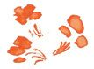
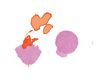

Everything you want to be, do, or have comes from love. Without love, you wouldn’t move. There would be no positive force to propel you to get up in the morning, to work, play, dance, talk, learn, listen to music, or do anything at all. You’d be like a stone statue. It is the positive force of love that inspires you to move and gives you the desire to be, do, or have anything. The positive force of love can create anything good, increase the good things, and change anything negative in your life. You have the power over your health, your wealth, your career, your relationships, and every area of your life. And that power – love – is inside you!
But if you have the power over your life, and that power is inside you, why isn’t your life amazing? Why isn’t every area of your life magnificent? Why don’t you have everything you want? Why haven’t you been able to do everything you want to do? Why aren’t you filled with joy every day?
The answer is: because you have a choice. You have a choice whether to love and harness the positive force – or not. And whether you realize it or not, every day of your life – every moment of your life – you have been making this choice. Without exception, every single time you experienced something good in your life, you loved and harnessed love’s positive force. And every single time you experienced something not good, you didn’t love, and the result was negativity. Love is the cause of all the good things in your life, and a lack of love is the cause of all the negative things and all the pain and suffering. Tragically, a lack of knowledge and understanding of the power of love is clear in people’s lives across the planet today – and in the entire history of humanity.

“Love is the most powerful and still most unknown energy in the world.”
Pierre Teilharde Chardin (1812-1889)
PRIEST AND PHILOSOPHER
Now, you are receiving the knowledge of the one and only power to all the good things in life, and you will be able to use it to change your entire life. But first, you must understand exactly how love works.
